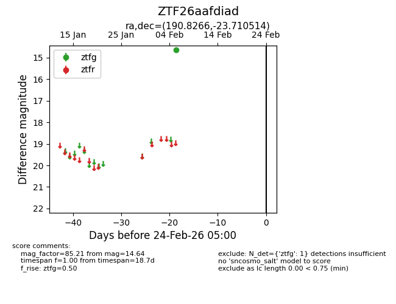
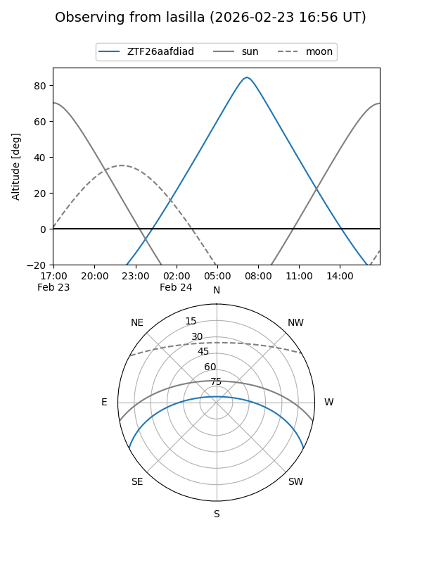
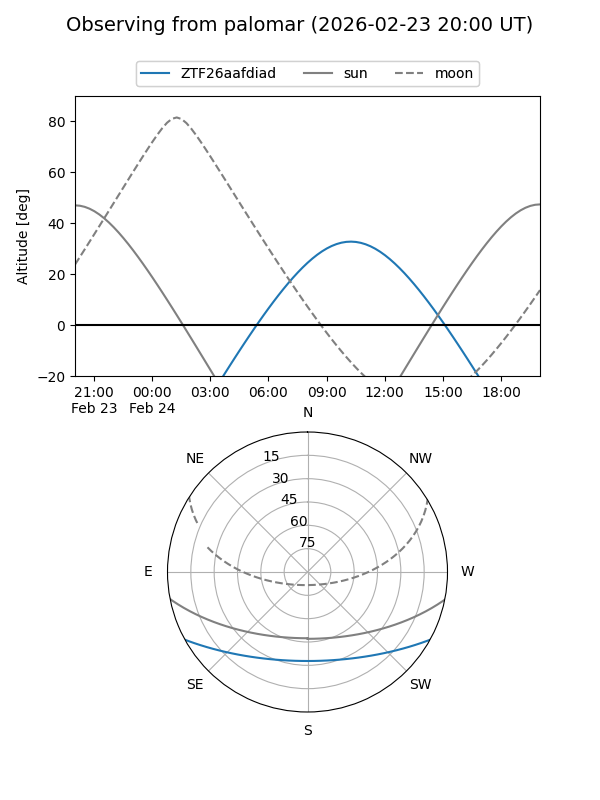

ZTF26aafdiad
Target ZTF26aafdiad at 2026-02-24 09:08
Aliases and brokers:
FINK: link
Lasair: link
ALeRCE: link
alt names
ZTF26aafdiad (ztf,fink_ztf)
Coordinates:
equatorial (ra, dec) = 190.8266,-23.71051
equatorial (HMS+DMS) = 12:43:18.39,-23:42:37.85
galactic (l, b) = (300.5326,+39.12335)
Flags:
Photometry:
last ztfg=14.64
1 ztfg detections
Lightcurve

Visibility


Additional plots